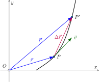
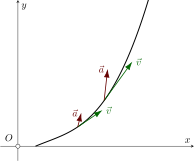

Consider a particle that moves in the \(xy\) plane as shown below. At some time \(t\) the particle is located at point \(P\). Its position is specified by the vector \(\vec{r}\) connecting the origin \(O\) and \(P\). This is shown in figure below. Let's say that at some later time \(t^\prime\) the particle is located at a new point \(P^\prime\) defined by vector \(\vec{r}^{\,\prime}\). As the particle moves from its position at time \(t\) to its new position at time \(t^\prime\) its displacement is given as \begin{align*} \Delta\vec{r}=\vec{r}^{\,\prime}-\vec{r} \end{align*} Note that \(\Delta\vec{r}\) is a vector and therefore represents both a change in magnitude and direction. The instantaneous velocity is defined as \begin{align*} \vec{v}=\lim_{\Delta t\to 0 }\frac{\Delta\vec{r}}{\Delta t}=\frac{d\vec{r}}{dt} \end{align*} We again stress that \(\vec{v}\) is a vector. The magnitude of \(\vec{v}\) is called the speed of the particle. The direction of the velocity vector is is tangent to the path of the particle as shown in the figure below.  Similarly, the acceleration is given as the time derivative of the velocity vector \begin{align*} \vec{a}=\frac{d{\vec v}}{dt} \end{align*} The plot below shows an example of the velocity and acceleration vector at two representative times. Note that velocity vector is tangent to the curve at each time, while the acceleration vector is not necessarily tangent to the path. 
We can express the position vector \(\vec{r}\) of a particle in rectangular coordinates as
\begin{align*} \vec{r} = x(t) \hat{i} + y(t)\hat{j} \end{align*}where \(\hat{i}\) and \(\hat{j}\) are the unit vectors in the \(x\) and \(y\) directions, respectively. Differentiating with respect to \(t\) we find the following expression for the velocity and acceleration
\begin{align*} \vec{v} &= \frac{d\vec{r}}{dt} = \dot{x}(t) \hat{i} + \dot{y}(t)\hat{j}\\ \vec{a} &= \frac{d\vec{v}}{dt} = \ddot{x}(t) \hat{i} + \ddot{y}(t)\hat{j}\\ \end{align*}It then follows that the scalar components of velocity and acceleration are
\begin{align*} v_x&=\dot{x}(t)\,\qquad v_y=\dot{y}(t)\\ a_x&=\ddot{x}(t)\,\qquad a_y=\ddot{y}(t)\\ \end{align*} such that \begin{align*} \vec{v} &= v_x \hat{i} + v_y \hat{j}\\ \vec{a} &= a_x \hat{i} + a_y\hat{j}\\ \end{align*}For the motion of a projectile the only force acting on the particle is that of gravity in the vertical or \(y\)-direction. The components of the acceleration are therefore
\begin{align*} a_x=\ddot{x}=0\qquad a_y=\ddot{y}=-g \end{align*}We therefore have uniform rectilinear motion in the horizontal or \(x\)-direction and uniformly accelerated rectilinear motion in the vertical or \(y\)-direction. The velocity and position are therfore given as \begin{alignat*}{3} v_x(t)&=v_{x0} &\qquad& v_y(t)&=&\, v_{y0}-gt\\ x(t)&=x_0+v_{x0}t &\qquad& ~~y(t)&=&\, y_0+v_{y0}t-\frac{1}{2}gt^2 \end{alignat*}